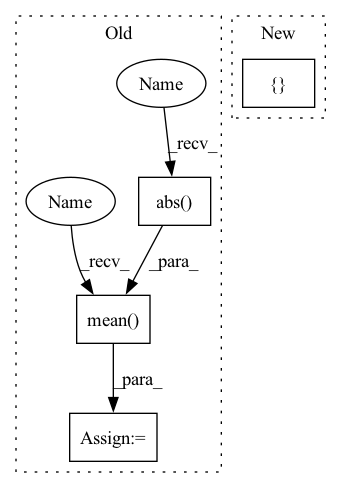

Pattern ID :12352
Before Change
delta = self.Rweight.detach() - w2
w3 = w2 + torch.abs(torch.sin(self.rotate)) * delta
self.Rotate = torch.mean(torch .abs( torch.sin(self.rotate)))
//* binarize
bw = BinaryQuantize().apply(w3, self.k.to(w.device), self.t.to(w.device))
if args.a32:
ba = a2After Change
w1 = w - w.mean([1,2,3], keepdim=True)
w2 = w1 / w1.std([1,2,3], keepdim=True)
a1 = a0 - a0.mean([1,2,3], keepdim=True)
a2 = a1 / a1.std([ 1,2,3In pattern: SUPERPATTERN
Frequency: 3
Non-data size: 4
Instances Fragment ID: 41987043
Project Name: lmbxmu/rbnn
Commit Name: 6c9607902cf8cf520ec24c6d6fdc7ee2b3f9f9b5
Time: 2020-09-07
Author: 791411501@qq.com
File Name: cifar/modules/binarized_modules.py
M Class Name: BinarizeConv2d
N Class Name: BinarizeConv2d
M Method Name: forward(2)
N Method Name: forward(2)
M Parent Class: nn.Conv2d
N Parent Class: nn.Conv2d
M File Name: cifar/modules/binarized_modules.py
N File Name: cifar/modules/binarized_modules.py
M Start Line: 32
M End Line: 57
N Start Line: 32
N End Line: 37
Before Change
delta = self.Rweight.detach() - w2
w3 = w2 + torch.abs(torch.sin(self.rotate)) * delta
self.Rotate = torch.mean( torch.abs( torch.sin(self.rotate)))
//* binarize
bw = BinaryQuantize().apply(w3, self.k.to(w.device), self.t.to(w.device))
if args.a32:
ba = a2After Change
a0 = input
w = self.weight
w1 = w - w.mean([1,2,3], keepdim=True)
w2 = w1 / w1.std([ 1,2,3 Fragment ID: 41987044
Project Name: lmbxmu/rbnn
Commit Name: 6c9607902cf8cf520ec24c6d6fdc7ee2b3f9f9b5
Time: 2020-09-07
Author: 791411501@qq.com
File Name: cifar/modules/binarized_modules.py
M Class Name: BinarizeConv2d
N Class Name: BinarizeConv2d
M Method Name: forward(2)
N Method Name: forward(2)
M Parent Class: nn.Conv2d
N Parent Class: nn.Conv2d
M File Name: cifar/modules/binarized_modules.py
N File Name: cifar/modules/binarized_modules.py
M Start Line: 32
M End Line: 57
N Start Line: 32
N End Line: 37
Before Change
delta = self.Rweight.detach() - w2
w3 = w2 + torch.abs(torch.sin(self.rotate)) * delta
self.Rotate = torch.mean( torch.abs( torch.sin(self.rotate)))
//* binarize
bw = BinaryQuantize().apply(w3, self.k.to(w.device), self.t.to(w.device))
if args.a32:
ba = a2After Change
w = self.weight
w1 = w - w.mean([1,2,3], keepdim=True)
w2 = w1 / w1.std([1,2,3], keepdim=True)
a1 = a0 - a0.mean([ 1,2,3 Fragment ID: 41987045
Project Name: lmbxmu/rbnn
Commit Name: 6c9607902cf8cf520ec24c6d6fdc7ee2b3f9f9b5
Time: 2020-09-07
Author: 791411501@qq.com
File Name: imagenet/modules/binarized_modules.py
M Class Name: BinarizeConv2d
N Class Name: BinarizeConv2d
M Method Name: forward(2)
N Method Name: forward(2)
M Parent Class: nn.Conv2d
N Parent Class: nn.Conv2d
M File Name: imagenet/modules/binarized_modules.py
N File Name: imagenet/modules/binarized_modules.py
M Start Line: 32
M End Line: 57
N Start Line: 32
N End Line: 37
Before Change
metric += sklearn_metrics.mean_squared_error(y_true_los, y_pred_los)
elif metrics_strategy == "MAPE":
metric += sklearn_metrics.mean_absolute_percentage_error(y_true_los, y_pred_los)
metric += np.mean(
np.abs( y_true_outcome - y_pred_outcome)
* max_visits
* np.array(list(map(lambda x: sigma_func(x), y_true_los)))
)
if verbose:
print("LOS Score:", metric)
return metric
After Change
- y/predictions are already flattened here
- so we don"t need to consider visits_length
metric = []
num_records = len(y_pred_outcome)
for i in range(num_records):
cur_outcome_pred = y_pred_outcome[i]
cur_los_pred = y_pred_los[i] Fragment ID: 41987048
Project Name: yhzhu99/covid-ehr-benchmarks
Commit Name: fc9fcafdeae37b009acb4acf87682f0d86306e69
Time: 2022-06-29
Author: yhzhu99@gmail.com
File Name: app/core/evaluation/covid_metrics.py
M Class Name: AnonimousClass
N Class Name: AnonimousClass
M Method Name: multitask_los_metric(6)
N Method Name: multitask_los_metric(7)
M Parent Class:
N Parent Class:
M File Name: app/core/evaluation/covid_metrics.py
N File Name: app/core/evaluation/covid_metrics.py
M Start Line: 83
M End Line: 116
N Start Line: 119
N End Line: 142